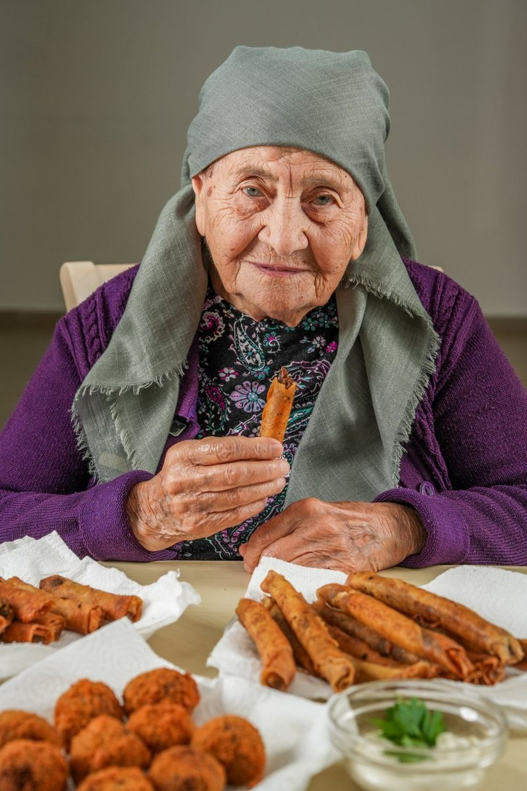

חוויה ייחודית של טעמים המעוררים געגועים לילדות מבית סבתא!
הסיפור של סבתא אסנת
היישר ממושב זכריה שבעמק האלה.
ניחוחות וטעמים מבית סבתא אסנת אליהו.
גדלתי אצל סבתא אסנת. הבית שלה היה בית פתוח – כל מי שהגיע רעב, יצא שבע. אחרי פציעה קשה, בזמן השיקום, התחלתי לגלגל קובות לפי הטעמים שלה… וככה הכל התחיל.
לסיפור המלא